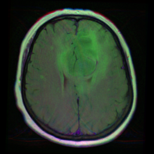
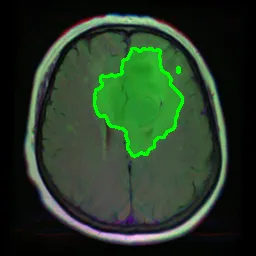

Clinical Data Scientist · Houston, TX
Trey Brown
I build and ship ML and LLM systems directly into clinical workflows — turning complex patient data into clear, actionable signal for the people delivering care.

I build and ship ML and LLM systems directly into clinical workflows — turning complex patient data into clear, actionable signal for the people delivering care.

MRI · input
U-Net contour · tumorA U-Net trained on BraTS MRI slices contours tumor regions pixel-by-pixel — raw scan in, segmentation mask out. The same architecture that turns an image into a structured, measurable finding.
Output from my own segmentation model · public BraTS data, no PHI.
A GPT-4o pipeline reads an echocardiogram impression and returns the specific valvular disease — by valve and severity — when structured documentation is missing.
Reads narrative/impression text today. Image-based echo input is on the roadmap.
Cellulitis of the right buttock documented — fever, swelling, and abscess. IV vancomycin and cefepime administered; surgical consult for incision & drainage planned. Infection clearly suspected and being actively treated.
A GPT-4o Workflow API model reads the chart, states whether infection is suspected and being treated, and extracts a structured SOFA score — written straight into the patient list via a StoreStructuredText print group.
De-identified example output · SOFA values illustrative.
The XGBoost model scores a de-identified feature vector, shows the SHAP contributors driving the prediction, and fires the operational threshold straight into Epic's Nebula OPA.
Synthetic feature vector · the live model scores 114K+ patients.
Built and deployed an XGBoost model trained on Epic Cosmos data to proactively identify patients at elevated HIV risk — enabling clinical outreach before symptoms appear. Jefferson Health was the first organization in the Epic ecosystem to translate a Cosmos research model through Slate development into a live Nebula production deployment with an operational OPA.
Epic Cosmos is a research environment — getting a model out of it and into a live clinical workflow had never been done before. This project proved the full pipeline is possible and documented the path for other health systems to follow.
Production GPT-4o inference pipeline that classifies echocardiogram impressions into multi-class valvular severity labels (none / trace-mild / moderate / severe) when structured documentation is absent. Migrated from Epic PMA to Microsoft Fabric using Azure OpenAI and Spark SQL for scale beyond the 15-minute RWB timeout limit.
Exploring lightweight transformer alternatives (<5GB, CPU-only) to replace high-cost LLM inference for brain edema classification from radiology impressions — targeting Epic Nebula deployment constraints. Current approach uses GPT-4o via Epic's AI Services framework; evaluating fine-tuned DistilBERT and model distillation strategies. Labeled 82K reports for training data.
GPT-4o-powered Epic Workflow API model that summarizes clinical notes on demand, surfacing output directly in the patient list via a StoreStructuredText print group in Hyperspace. Built using Epic's native cognitive inference framework (epic.io.workflow_integrations) extracted from Slate Docker.
Retrieval-augmented pipeline that grounds an LLM in clinical guideline text to surface open care gaps for a patient — retrieving the relevant guidance, then generating a recommendation tied back to its source so clinicians can verify it rather than trust a black box.
Internal Model Context Protocol tool that exposes clinical data and model utilities to LLM-based workflows through a standard interface — letting an assistant pull the right context and call the right model.
Designing and deploying predictive models in Epic's production environment. Built the first Cosmos-to-Nebula ML deployment in the Epic ecosystem. Presented at Epic XGM 2026.
Partnered with the Medical Director of Data Science to prototype clinical predictive models using JupyterLab. Extracted and preprocessed large-scale patient data from Epic Clarity using SQL to build ML-ready datasets. Built executive-facing dashboards tracking clinical KPIs across patient throughput, staffing, and virtual nursing programs.
Owned the organization's entire SER master file — the source of truth for provider identity across Epic. Sole author and maintainer of a 3,000-line SQL job that ran daily to automatically provision all internal providers, controlling how provider data flowed in and out of the system. Configured RTE for 4,000+ monthly eligibility checks and resolved X12/EDI claim rejection issues across multiple payers.
I'm open to new opportunities.